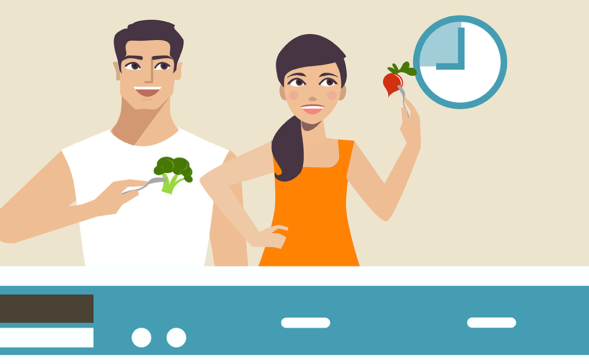

EAT SLOWER
How fast are you eating?
Hopefully you've become much more aware of how fast you eat most meals
and snacks these days. Gauge your progress by answering the following
questions:
- Are you able to catch yourself when you are not eating mindfully?
- When does it happen? At the start, middle, or end of a meal or a snack?
- Why do you think you eat slower on some occasions and not others?
- What do you think you could do to become more aware so that you engage in a more mindful and slower eating experience?
If you can answer most of these questions, you are well on your way to
becoming a more mindful and slower eater!